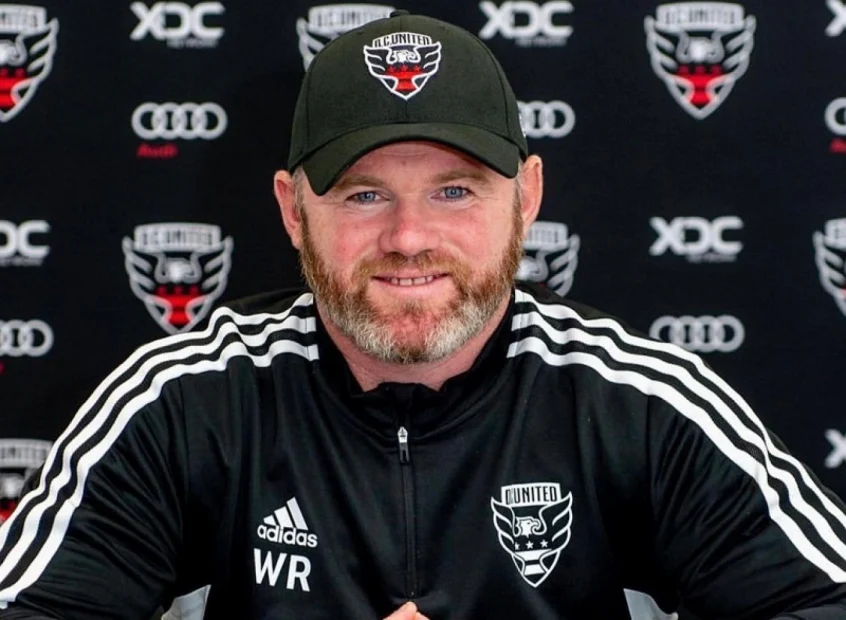

Futebol
Craques: Phil Foden, Walker, Pickford, Alexander-Arnold, Kane, Bellingham.
Melhores jogadores da história: Wayne Rooney, Steven Gerrard, David Beckham, Lampard.
Wayne Rooney

- Nome completo: Wayne Mark Rooney
- Data de nascimento: 24 de outubro de 1985
- Local de nascimento: Liverpool, Reino
- Nacionalidade: Ingles
- Altura: 1,76
- Apelido: Shrek